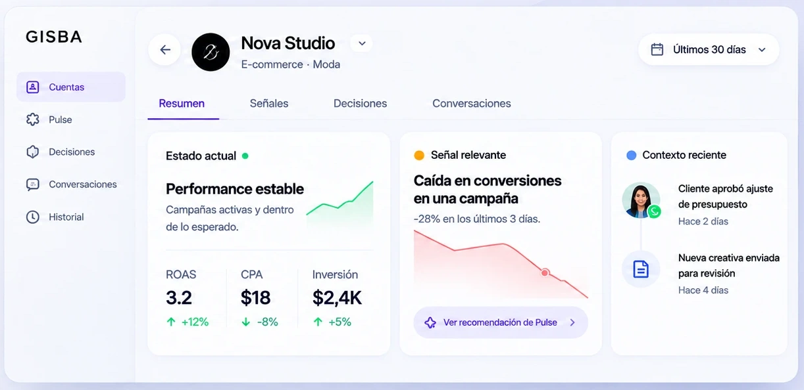
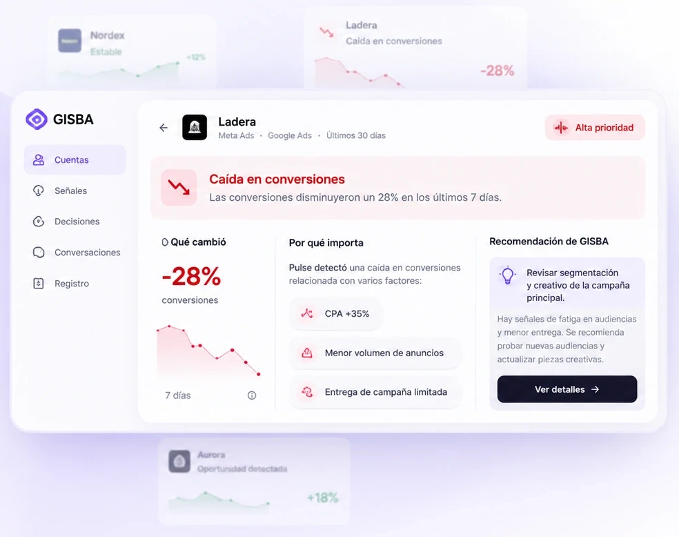
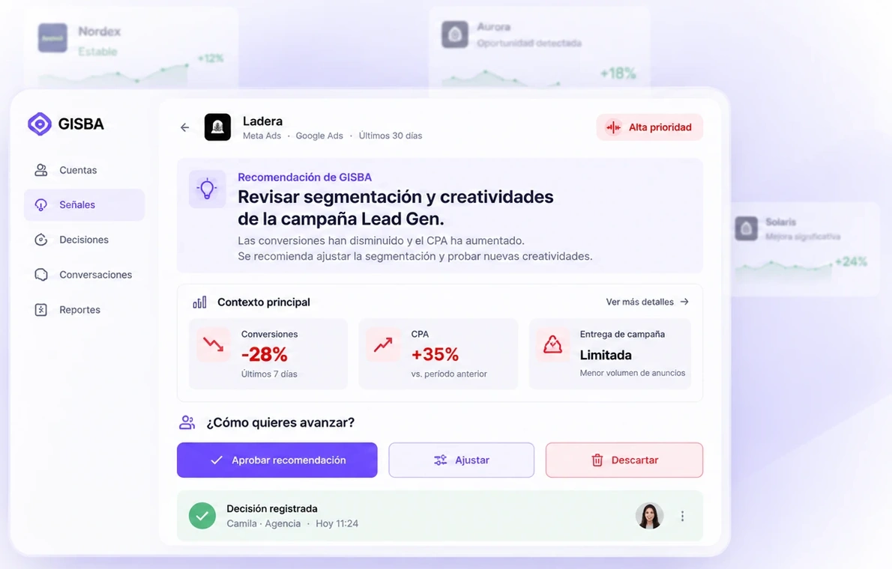
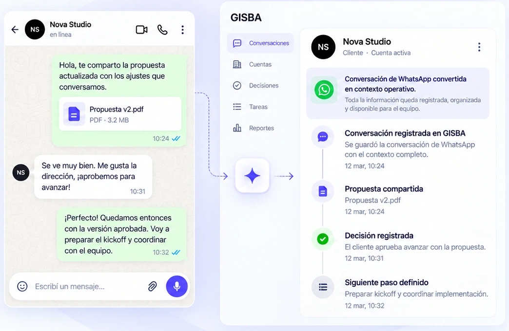

01 · Contexto
Todo parte con el contexto correcto.
GISBA reúne señales, métricas y decisiones recientes de cada cuenta para que tu equipo entienda qué está pasando antes de actuar.

02 · Detecta
No revises todo. Empieza por lo que importa.
GISBA Pulse analiza tus cuentas, prioriza las señales relevantes y te muestra qué cambió, por qué importa y qué conviene hacer.

03 · Decide
Tu equipo decide con contexto.
GISBA presenta la recomendación y el contexto necesario para que tu agencia evalúe cómo avanzar.

04 · Coordina
Avanza con tu cliente sin perder el hilo.
Coordina con tu cliente por WhatsApp y conserva el contexto en GISBA. La conversación, la decisión y el siguiente paso quedan registrados en la cuenta.
- Conversaciones por WhatsApp
- Decisiones registradas automáticamente
- Siguiente paso claro para el equipo
